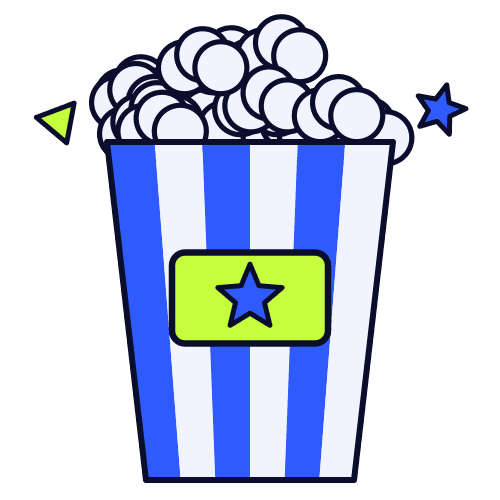
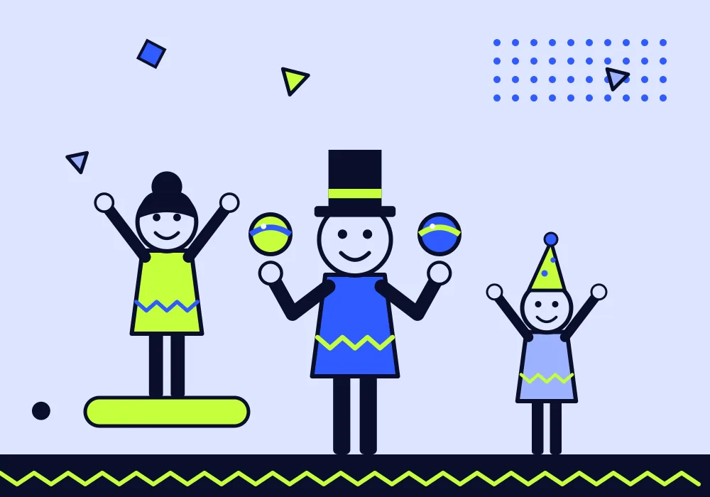

Der verflixte Koffer
Clown Kiki will verreisen, aber der Koffer ist zu voll. Heraus kommen ein Gummihuhn, zwölf Socken und ein Regenschirm, der singen kann. Wer laut genug „Zu!“ ruft, hilft beim Schließen.
Neun Nummern, eine Pause und ganz viel Konfetti: So läuft eine Vorstellung im Zirkus Zickzack ab. Die Show heißt in diesem Jahr „Hoch, höher, Zickzack!“ und dauert mit Pause 90 Minuten.
Die Zeiten gelten für die Vorstellung um 15 Uhr. Bei den anderen Vorstellungen verschiebt sich alles entsprechend: Um 11 Uhr ist zum Beispiel um 12:30 Uhr Schluss mit der Show.
| Uhrzeit | Nummer | Was passiert? |
|---|---|---|
| Manege frei! | Zirkusdirektorin Zora Zickzack begrüßt alle Gäste und erklärt die Zirkusregeln. | |
| Der verflixte Koffer | Clown Kiki packt aus – und bekommt den Koffer nie wieder zu. | |
| Robbe Rolf und der Riesenball | Die größte Puppe des Zirkus balanciert, rollt und winkt. | |
| Sieben auf einen Streich | Jongleur Jonas wirft Bälle, Ringe und Keulen. Kinder zählen mit. | |
| Pause | 20 Minuten Popcorn, Limo und Toilettenpause. | |
| Die Kreisels auf dem Einrad | Zwei Geschwister fahren Einrad – rückwärts, im Kreis und übereinander. | |
| Hoch hinaus | Akrobatin Ayla fliegt am Trapez unter der Zeltkuppel. | |
| Großes Konfetti-Finale | Alle Artist:innen in der Manege, Konfetti für das ganze Publikum. | |
| Mitmach-Workshop | 30 Minuten selbst ausprobieren: Jonglieren, Balancieren, Clownsnasen. |
Clown Kiki will verreisen, aber der Koffer ist zu voll. Heraus kommen ein Gummihuhn, zwölf Socken und ein Regenschirm, der singen kann. Wer laut genug „Zu!“ ruft, hilft beim Schließen.
Mila und Tom Kreisel sind Geschwister und fahren Einrad, seit sie sieben sind. Sie fahren im Kreis, rückwärts und am Ende sogar zu zweit auf einem Rad.
Zum Schluss kommen alle in die Manege. Es regnet Konfetti aus Papier, das wir danach wieder einsammeln und recyceln. Wer möchte, darf beim Aufräumen helfen.
In der Pause gibt es frisches Popcorn, Wasser, Apfelschorle und unsere Zickzack-Limo mit Zitrone und Minze. Für Kinder mit Allergien haben wir Reiswaffeln und Obst. Die Toiletten sind direkt neben dem Zelt.
Getränke und Snacks bezahlt ihr bar oder mit Karte. Eigenes Essen dürft ihr natürlich auch mitbringen.


Nach jeder Vorstellung bleibt die Manege 30 Minuten offen. Dann zeigen dir unsere Artist:innen ihre einfachsten Tricks. Der Workshop ist im Ticket schon drin.